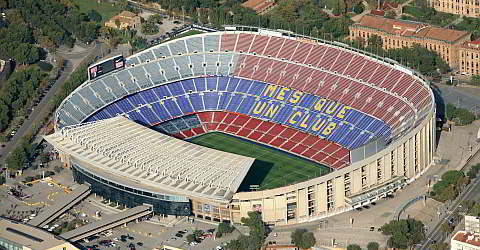
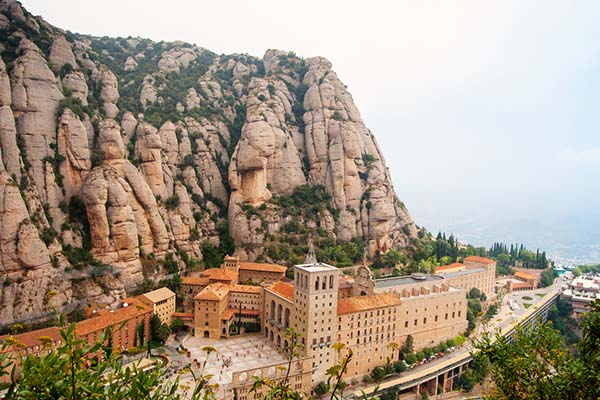
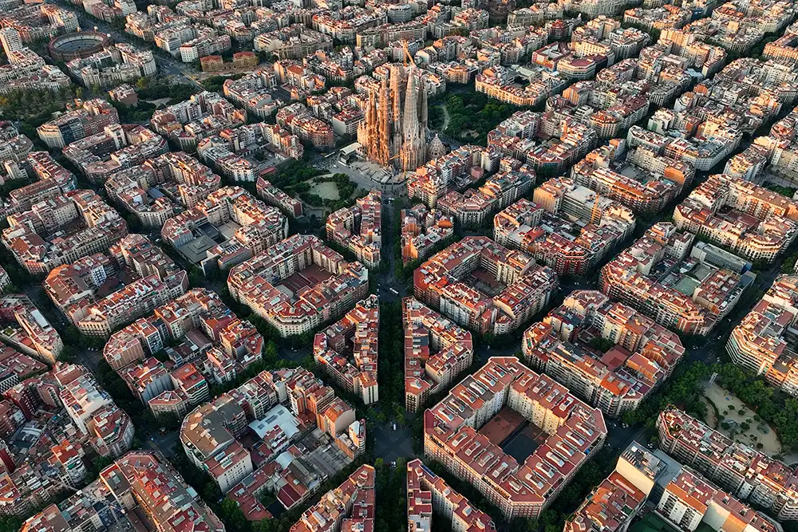

Visit Barcelona, Spain
The best place in Spain
Spain is a place rich in history and places to visit. There are countless beautiful buildings in Barcelona like the La Sagrada Familia, which is the most iconic and most reconized one. There is also lots of history in barcelona. The El Clasico, a soccer game between 2 rival teams FC Barcelona and Real Madrid, is one of the biggest games on the planet. Additionally, the El Clasico has gets 600 million views for a single game, which is 6 times the views of the superbowl, which is roughly 100 million.
La Sagrada Familia

Camp Nou stadium

Mountains in Barcelona

Beach in Barcelona

Birds eye view of the city of Barcelona

Links:
10 things Barcelona, Spain is known for.